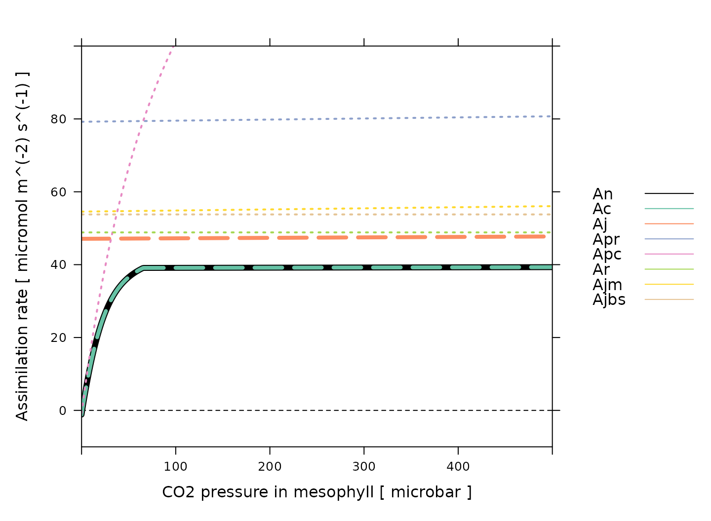
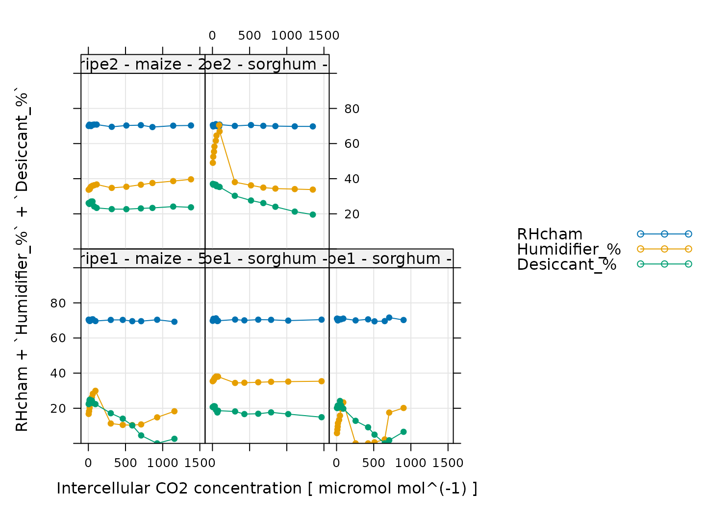
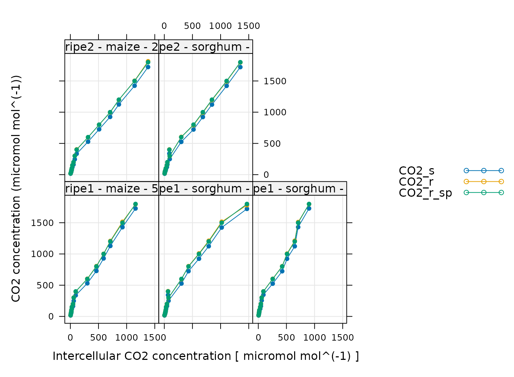
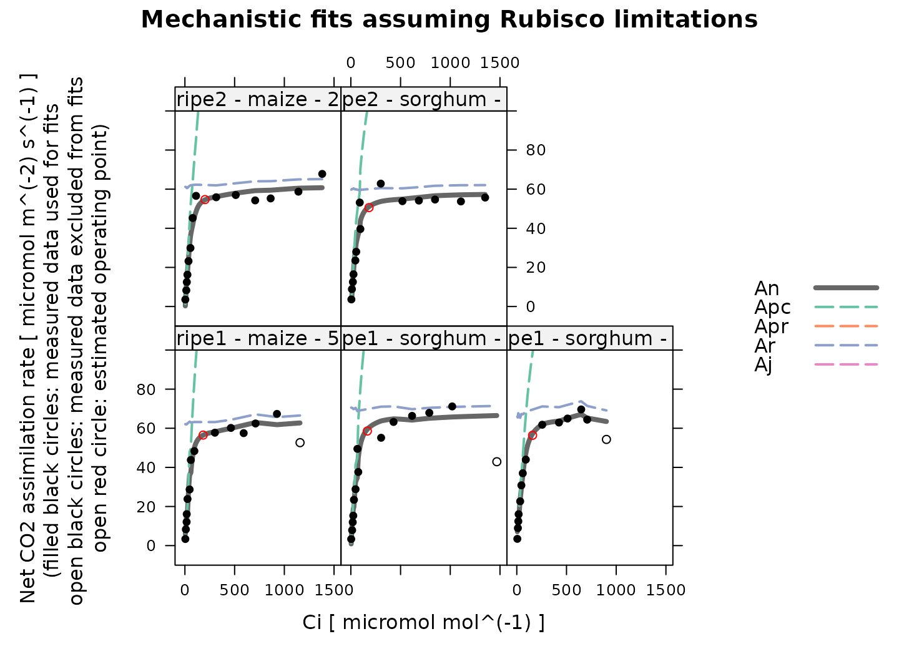
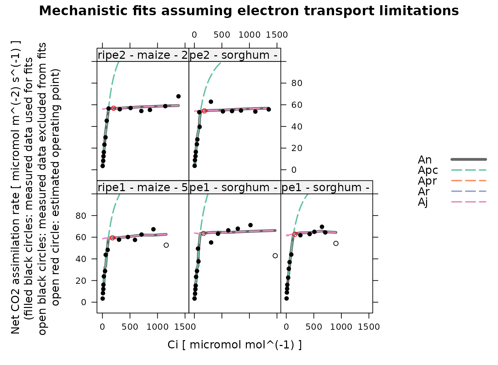
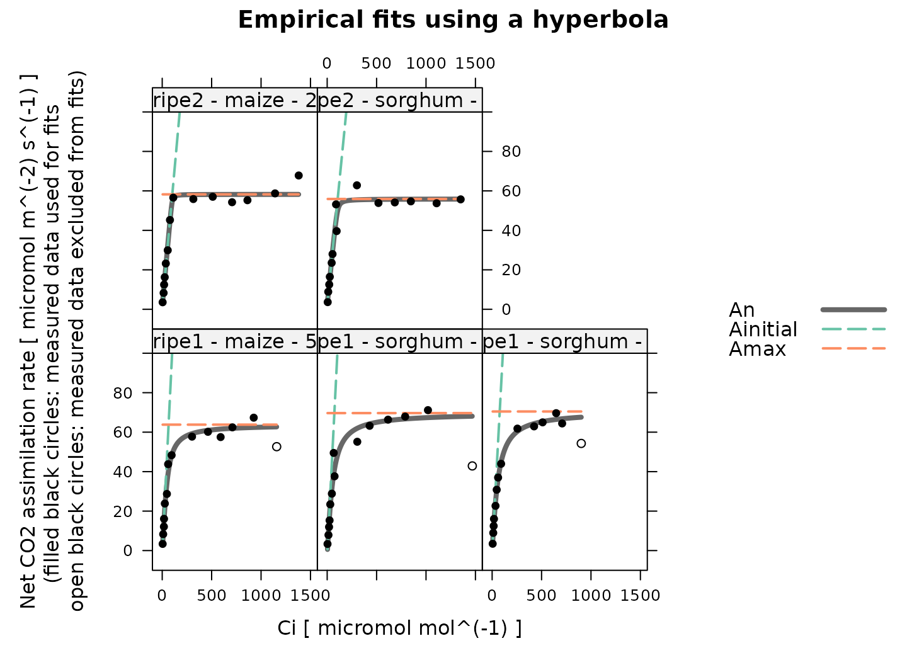
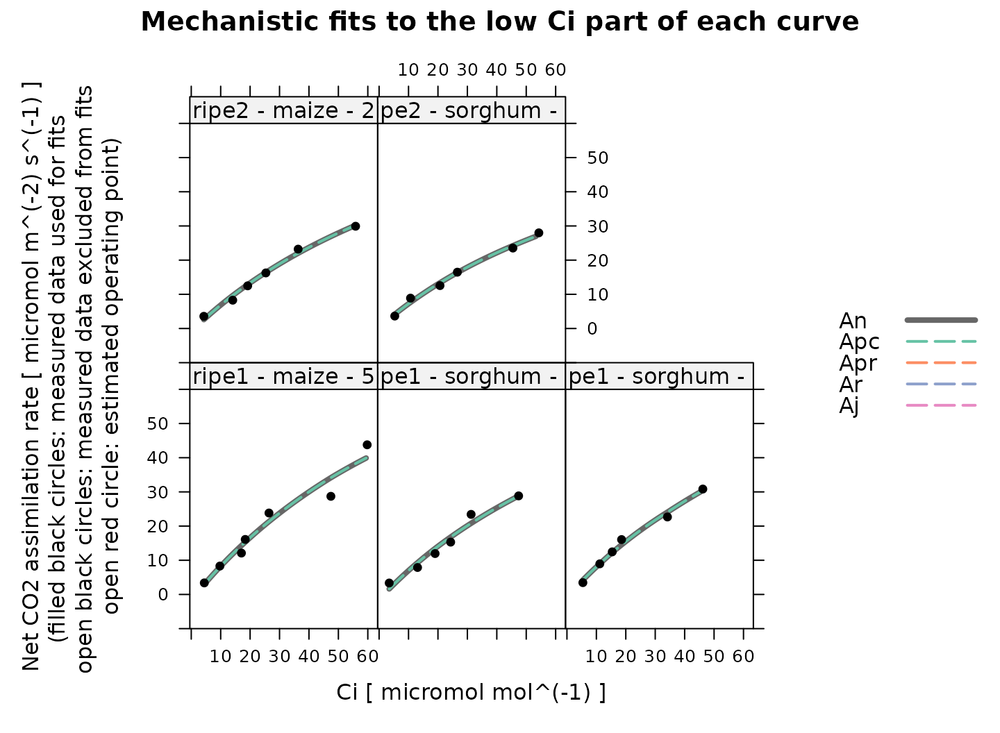
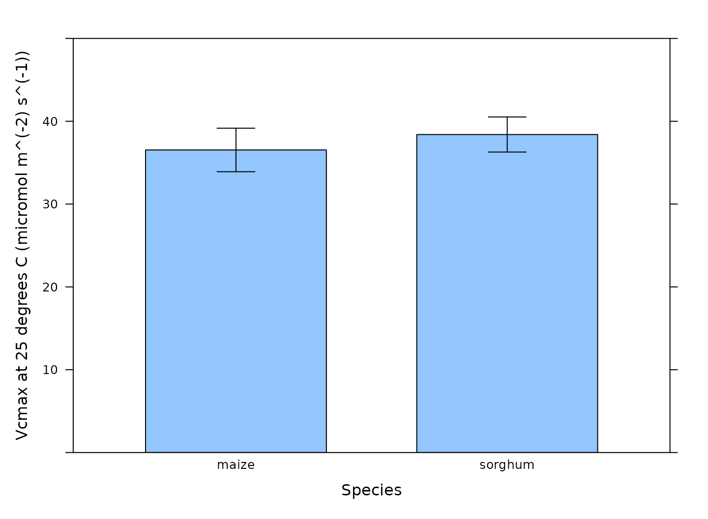
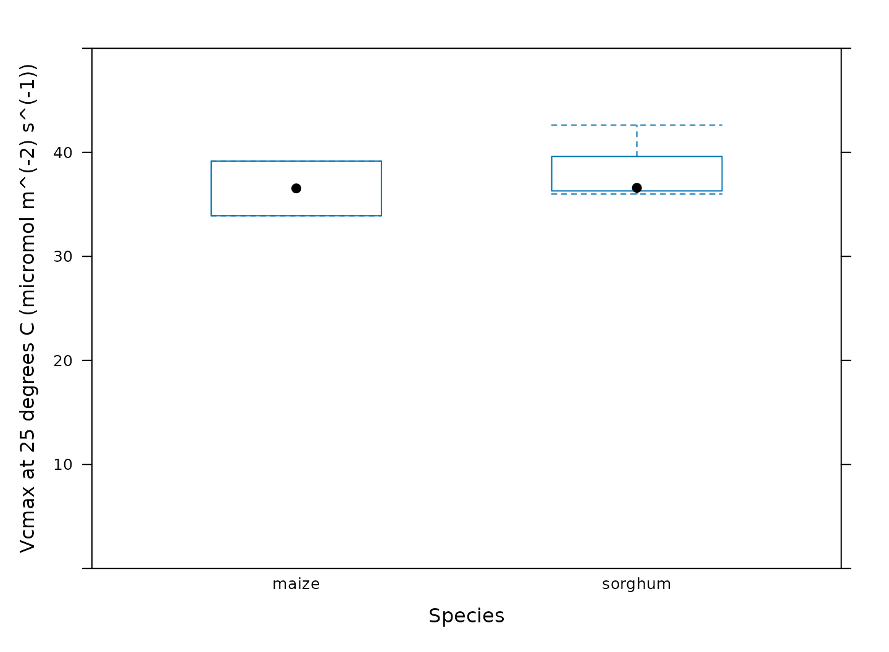

Analyzing C4 A-Ci Curves
Source:vignettes/web_only/analyzing_c4_aci_curves.Rmd
analyzing_c4_aci_curves.RmdOverview
In this vignette, we will give an example showing how to analyze
C4A-Ci data using the
PhotoGEA package. The commands in this vignette can be used
to initialize your own script, as described in Customizing Your Script.
Background
Understanding C4A-Ci Curves
An A-Ci curve (or CO2 response curve) is a particular type of gas exchange measurement where a living leaf is exposed to varying concentrations of CO2. For each CO2 concentration in the sequence, the net assimilation rate (), stomatal conductance to H2O (), intercellular CO2 concentration (), and other important quantities are measured and recorded. Typically, other environmental variables such as temperature, humidity, and incident photosynthetically-active photon flux density (PPFD) are held constant during the measurement sequence so that changes in assimilation rates can be attributed to CO2 alone.
Because of their different cell structures and biochemical pathways, C3 and C4 plants have very different responses to CO2. Here, we will only be discussing C3 plants.
The full C4 photosynthetic pathway is quite complicated, consisting of at least two hundred individual reactions, each of which may have an impact on a measured A-Ci curve. However, simplified models for net CO2 assimilation are available and are much easier to understand and work with. These models tend to be based around PEP carboxylase and rubisco kinetics, describing how the net assimilation rate responds to the partial pressure of CO2 in the mesophyll or bundle sheath cells. The most widely-used model is described in in Biochemical Models of Leaf Photosynthesis (S. von Caemmerer 2000).
This model provides a framework for understanding the changes in that occur as a C4 leaf is exposed to successively higher concentrations of CO2. Overall, the photosynthetic response to CO2 under high light conditions can be understood as follows:
For low levels of CO2, CO2 assimilation is primarily limited by PEP carboxylase activity in the mesophyll cells; the maximum rate of PEP carboxylase activity is denoted by .
For higher levels of CO2, CO2 assimilation can be limited by Rubisco activity in the bundle sheath cells, PEP regeneration in the mesophyll cells, or electron transport going to support RuBP and PEP regeneration. The maximum rate of Rubisco activity is denoted by , the maximum rate of PEP regeneration is denoted by , and the potential electron transport rate going to support RuBP and PEP regeneration at a given incident PPFD is denoted by . (Note: is distinct from the maximum rate of electron transport that could be achieved at any incident PPFD, which is denoted by .)
More specifically, the model provides equations that calculate the net assimilation rate from the , , , , the total rate of non-photorespiratory CO2 release across the mesophyll and bundle sheath cells in the light (), the partial pressure of CO2 in the mesophyll (), and several other parameters. The full equations are quite complicated. is given by the smaller of the enzyme-limited rate () and the electron-transport-limited rate (). is co-limited by PEP carboxylase activity, Rubisco activity, and PEP regeneration, while is co-limited by electron transport in the mesophyll and bundle-sheath cells. Under certain circumstances (when bundle sheath conductance is zero and all photosystem II activity occurs in the mesophyll), then the complicated equations reduce to a simpler situation where is given by the minimum of five separate rates:
The PEP-carboxylase-limited rate ()
The Rubisco-limited rate ()
The PEP-regeneration-limited rate ()
The electron-transport-limited rate in the mesophyll ()
The electron-transport-limited rate in the bundle sheath ()
The simplified version can be helpful for understanding the rough model behavior, but it is important to keep in mind that the real model is different, and that is generally not equal to the minimum of these five rates in the full model. The plot below shows an example of the full model output:

(Note: this figure was generated using the
calculate_c4_assimilation function from the
PhotoGEA package, and it represents the photosynethetic
response of a C4 leaf according to the model with
J_at_25 = 220 micromol m^(-2) s^(-1), RL_at_25
= 1 micromol m^(-2) s^(-1), Vcmax_at_25 = 30 micromol
m^(-2) s^(-1), Vpmax_at_25 = 150 micromol m^(-2) s^(-1),
Vpr = 80 micromol m^(-2) s^(-1), and a leaf temperature of
30 degrees C. Temperature response parameters from Susanne von Caemmerer (2021) were used for
these calculations.)
There are several important things to notice about this plot:
For these conditions, is always equal to . Thus, assimilation is enzyme-limited across the entire range of CO2 values.
The enzyme-limited rate is always smaller than either of the three rates related to individual enzymes (, , and ).
The electron-transport-limited rate is always smaller than either of the two rates related to electron transport in individual cell types ( and ).
The dependence of , , and on CO2 concentration is very similar, where all three are nearly independent of CO2.
The PEP-carboxylase-limited rate () is the only rate that approaches zero, which happens as the CO2 concentration decreases.
Regardless of which process may be limiting assimilation, never decreases as CO2 increases.
An important conclusion here is that PEP carboxylase always limits assimilation at low CO2 concentrations, and that one or more of Rubisco activity, electron transport, and PEP regeneration limits assimilation at high CO2 concentrations. These three processes each produce a plateau with a nearly flat response to CO2.
One of the most common reasons to measure an A-Ci
curve is to interpret it in the context of this model. In other words,
by fitting the model’s equations to a measured curve, it is possible to
estimate values for
,
,
,
,
,
and others. See the documentation for
calculate_c4_assimilation for more information about these
important quantities.
From the discussion above, it is evident that determining the rate-limiting process at high in a C4A-Ci curve is difficult or impossible because the three potentially limiting processes each exhibit nearly identical responses to CO2. There are two main ways to deal with this issue:
One way is to assume a particular limiting process based on outside information. For example, curves measured under high light conditions (where electron transport rates will be high), and at warm temperatures (where PEP regeneration rates will be high) are likely to be Rubisco-limited at high .
Another option is to use an empirical non-rectangular hyperbola to fit the curve. This enables estimates of , the maximum rate of gross assimilation, which is related to the highest value of () by . This quantity has no meaningful mechanistic interpretation but can be used to compare assimilation rates between groups of plants. When taking this approach, values of can still be estimated from the low part of the curve using the mechanistic model.
These approaches will be demonstrated below in this vignette.
Practicalities
There are a few other important practicalities to keep in mind when thinking about CO2 response curves.
One point is that C4 net assimilation models generally predict the response of assimilation to the partial pressure of CO2 in the mesophyll (), but gas exchange measurements can only determine the CO2 concentration in the leaf’s intercellular spaces (). Thus, an extra step is required when interpreting A-Ci curves. If the mesophyll conductance to CO2 () and the total pressure () are known, then it is possible to calculate values of from , , , and . Otherwise, it is also possible to assume an infinite mesophyll conductance; in this case, , and the estimated values of and other parameters can be considered to be “effective values” describing the plant’s response to intercellular CO2 rather than the true response to chloroplastic CO2.
Another important point is that plants generally do not appreciate being starved of CO2, so it is not usually possible to start a response curve at low CO2 and proceed upwards. A more typical approach is to:
Begin at ambient atmospheric CO2 levels.
Decrease towards a low value.
Return to ambient levels and wait for the plant to reacclimate; this waiting period is usually accomplished by logging several points at ambient CO2 levels.
Increase to higher values.
When taking this approach, it therefore becomes necessary to remove the extra points measured at ambient CO2 levels and to reorder the points according to their CO2 values before plotting or analyzing them.
Note: while this approach is commonly used, some reasearchers advocate for starting either at high or low CO2, and continuously decreasing or increasing the CO2 concentration (Sharkey 2019).
The Data
A-Ci curves are commonly measured using a
portable photosynthesis system such as the Licor Li-6800. These machines
record values of
,
,
,
and many other important quantities. They produce two types of output
files: plain-text and Microsoft Excel. It is often more convenient to
work with the Excel files since the entries can be easily modified (for
example, to remove an extraneous row or add a new column). On the other
hand, it can be more difficult to access the file contents using other
pieces of software such as R. However, the PhotoGEA package
reduces this barrier by including tools for reading Licor Excel files in
R, which will be demonstrated in the following section.
Loading Packages
As always, the first step is to load the packages we will be using.
In addition to PhotoGEA, we will also use the
lattice package for generating plots.
If the lattice package is not installed on your R setup,
you can install it by typing
install.packages('lattice').
Loading Licor Data
The PhotoGEA package includes two files representing
A-Ci curves measured using two Li-6800 instruments.
The data is stored in Microsoft Excel files, and includes curves
measured from two different crop species (sorghum and maize) and several
different plots of each. Each curve is a sixteen-point CO2
response curve; in other words, the CO2 concentration in the
air surrounding the leaf was varied, and
(among other variables) was measured at each CO2 setpoint.
Although these two files are based on real data, noise was added to it
since it is unpublished.
The files will be stored on your computer somewhere in your R package
installation directory, and full paths to these files can be obtained
with PhotoGEA_example_file_path:
# Define a vector of paths to the files we wish to load; in this case, we are
# loading example files included with the PhotoGEA package
file_paths <- c(
PhotoGEA_example_file_path('c4_aci_1.xlsx'),
PhotoGEA_example_file_path('c4_aci_2.xlsx')
)(Note: When loading your own files for analysis, it
is not advisable to use PhotoGEA_example_file_path as we
have done here. Instead, file paths can be directly written, or files
can be chosen using an interactive window. See Input Files below for more information.)
To actually read the data in the files and store them in R objects,
we will use the read_gasex_file function from
PhotoGEA. Since there are multiple files to read, we will
call this function once for each file using lapply:
# Load each file, storing the result in a list
licor_exdf_list <- lapply(file_paths, function(fpath) {
read_gasex_file(fpath, 'time')
})The result from this command is an R list of “extended data frames”
(abbreviated as exdf objects). The exdf class
is a special data structure defined by the PhotoGEA
package. In many ways, an exdf object is equivalent to a
data frame, with the major difference being that an exdf
object includes the units of each column. For more information, type
?exdf in the R terminal to access the built-in help menu
entry, or check out the Working With Extended Data
Frames vignette.
Generally, it is more convenient to work with a single
exdf object rather than a list of them, so our next step
will be to combine the objects in the list. This action can be
accomplished using the rbind function, which combines
table-like objects by their rows; in other words, it stacks two or more
tables vertically. This action only makes sense if the tables have the
same columns, so before we combine the exdf objects, we
should make sure this is the case.
The PhotoGEA package includes a function called
identify_common_columns that can be used to get the names
of all columns that are present in all of the Licor files. Then, we can
extract just those columns, and then combine the exdf
objects into a single one.
# Get the names of all columns that are present in all of the Licor files
columns_to_keep <- do.call(identify_common_columns, licor_exdf_list)
# Extract just these columns
licor_exdf_list <- lapply(licor_exdf_list, function(x) {
x[ , columns_to_keep, TRUE]
})
# Use `rbind` to combine all the data
licor_data <- do.call(rbind, licor_exdf_list)Now we have a single R object called licor_data that
includes all the data from several Licor Excel files. For more
information about consolidating information from multiple files, see the
Common Patterns section of the Working
With Extended Data Frames vignette.
Validating the Data
Before attempting to fit the curves, it is a good idea to do some basic checks of the data to ensure it is organized properly and that it was measured properly.
Basic Checks
First, we should make sure there is a column in the data whose value
uniquely identifies each curve. In this particular data set, several
“user constants” were defined while making the measurements that help to
identify each curve: instrument, species, and
plot. However, neither of these columns alone are
sufficient to uniquely identify each curve. We can solve this issue by
creating a new column that combines the values from each of these:
# Create a new identifier column formatted like `instrument - species - plot`
licor_data[ , 'curve_identifier'] <-
paste(licor_data[ , 'instrument'], '-', licor_data[ , 'species'], '-', licor_data[ , 'plot'])When measuring response curves (or any other type of gas exchange data), it is strongly recommended to record key pieces of metadata in the log files using “user constants,” as was done in this example. For more information, please see the Guide to Licor LI-6800 User Constants, which also includes advice for dealing with data sets that do not contain such metadata.
The next step is to make sure that this column correctly identifies
each response curve. To do this, we can use the
check_response_curve_data function from
PhotoGEA. Here we will supply the name of a column that
should uniquely identify each response curve
(curve_identifier), the expected number of points in each
curve (16), the name of a “driving” column that should
follow the same sequence in each curve (CO2_r_sp). If the
data passes the checks, this function will have no output and will not
produce any messages. (For more information, see the built-in help menu
entry by typing ?check_response_curve_data, or visit the Frequently Asked Questions.)
# Make sure the data meets basic requirements
check_response_curve_data(licor_data, 'curve_identifier', 16, 'CO2_r_sp')However, if check_response_curve_data detects an issue,
it will print a helpful message to the R terminal. For example, if we
had specified the wrong number of points or the wrong identifier column,
we would get error messages:
check_response_curve_data(licor_data, 'curve_identifier', 15)
#> curve_identifier npts
#> 1 ripe1 - maize - 5 16
#> 2 ripe1 - sorghum - 2 16
#> 3 ripe1 - sorghum - 3 16
#> 4 ripe2 - maize - 2 16
#> 5 ripe2 - sorghum - 3 16
#> Error in check_response_curve_data(licor_data, "curve_identifier", 15): One or more curves does not have the expected number of points.
check_response_curve_data(licor_data, 'species', 16)
#> species npts
#> 1 maize 32
#> 2 sorghum 48
#> Error in check_response_curve_data(licor_data, "species", 16): One or more curves does not have the expected number of points.Reorganizing the Data
As discussed in Practicalities, there are several repeated points logged at the same CO2 concentration, and the points are not logged in order of ascending or descending concentration. In fact, the sequence of CO2 setpoints is as follows:
licor_data[licor_data[, 'curve_identifier'] == 'ripe2 - maize - 2', 'CO2_r_sp']
#> [1] 400 300 200 150 100 75 50 20 400 400 600 800 1000 1200 1500
#> [16] 1800The extra recovery points should not be used when plotting or fitting
the curves. Additionally, any plots may look strange if the points are
not ordered by their Ci values.
So, we would like to remove the ninth and tenth points (where the
setpoint has been reset to 400 to allow the leaf to reacclimate to
ambient CO2 levels), and reorder the data so it is arranged
from low to high values of Ci. This can be done using the
organize_response_curve function from
PhotoGEA:
# Remove points with duplicated `CO2_r_sp` values, reorder by `Ci`, and
# calculate average values of leaf temperature and Qin
licor_data <- organize_response_curve_data(
licor_data,
'curve_identifier',
c(9, 10),
'Ci',
columns_to_average = c('TleafCnd', 'Qin')
)In this command, we also used the optional
columns_to_average input argument to calculate average
values of leaf temperature and incident PPFD for each curve, which are
attached as new columns called TleafCnd_avg and
Qin_avg, respectively. These will be important later for
calculating values of
.
Plotting the A-Ci Curves
One qualitative way to check the data is to simply create a plot of
the A-Ci curves. In this situation, the
lattice library makes it simple to include each curve as
its own separate subplot of a figure. For example:
# Plot all A-Ci curves in the data set
xyplot(
A ~ Ci | curve_identifier,
data = licor_data$main_data,
type = 'b',
pch = 16,
auto = TRUE,
grid = TRUE,
xlab = paste('Intercellular CO2 concentration [', licor_data$units$Ci, ']'),
ylab = paste('Net CO2 assimilation rate [', licor_data$units$A, ']')
)
Some of these curves look a bit strange, but this is related to the noise that was intentionally added to the data. Nevertheless, there are a few points that we should probably exclude before attempting to fit the curves. One issue is that the model never predicts a decrease in when increases. So, it is usually a good idea to exclude any points at high where is observed to decrease by a large amount. This dropoff in assimilation is due to one or more processes that are not captured by the model, and the fits will be unreliable. We will remove these points later, after we have made several other data quality checks.
Additional Plots for Qualitative Validation
Sometimes a Licor will override the temperature or humidity controls while making measurements; in this case, conditions inside the measurement chamber may not be stable, and we may wish to exclude some of these points. We can check for these types of issues by making more plots. In the following sections, we will generate several different plots to check each curve for quality.
Humidity Control
# Make a plot to check humidity control
xyplot(
RHcham + `Humidifier_%` + `Desiccant_%` ~ Ci | curve_identifier,
data = licor_data$main_data,
type = 'b',
pch = 16,
auto = TRUE,
grid = TRUE,
ylim = c(0, 100),
xlab = paste('Intercellular CO2 concentration [', licor_data$units$Ci, ']')
)
Here, Humidifier_% and Desiccant_%
represent the flow from the humidifier and desiccant columns, where a
value of 0 indicates that the valve to the column is fully closed and a
value of 100 indicates that the valve to the column is fully opened.
RHcham represents the relative humidity inside the chamber
as a percentage (in other words, as a value between 0 and 100).
When these curves were measured, a chamber humidity setpoint was specified. So, when looking at this plot, we should check that the relative humidity is fairly constant during each curve. Typically, this should be accompanied by relatively smooth changes in the valve percentages as they accomodate changes in ambient humidity and leaf photosynthesis. In this plot, all the data looks good.
Temperature Control
# Make a plot to check temperature control
xyplot(
TleafCnd + Txchg ~ Ci | curve_identifier,
data = licor_data$main_data,
type = 'b',
pch = 16,
auto = TRUE,
grid = TRUE,
ylim = c(25, 40),
xlab = paste('Intercellular CO2 concentration [', licor_data$units$Ci, ']'),
ylab = paste0('Temperature (', licor_data$units$TleafCnd, ')')
)
Here, TleafCnd is the leaf temperature measured using a
thermocouple, and Txchg is the temperature of the heat
exhanger that is used to control the air temperature in the measurement
instrument. When these curves were measured, an exchanger setpoint was
specified. So, when looking at this plot, we should check that
Txchg is constant during each curve and that the leaf
temperature does not vary in an erratic way. In this plot, all the data
looks good.
CO2 Control
# Make a plot to check CO2 control
xyplot(
CO2_s + CO2_r + CO2_r_sp ~ Ci | curve_identifier,
data = licor_data$main_data,
type = 'b',
pch = 16,
auto = TRUE,
grid = TRUE,
xlab = paste('Intercellular CO2 concentration [', licor_data$units$Ci, ']'),
ylab = paste0('CO2 concentration (', licor_data$units$CO2_r, ')')
)
Here, CO2_s is the CO2 concentration in the
sample cell, CO2_r is the CO2 concentration in
the reference cell, and CO2_r_sp is the setpoint for
CO2_r. When these curves were measured, a sequence of
CO2_r values was specified, so, when looking at this plot,
we should check that CO2_r is close to
CO2_r_sp. We also expect that CO2_s should be
a bit lower than CO2_r because the leaf in the sample
chamber is assimilating CO2, which should reduce its
concentration in the surrounding air. (An exception to this rule occurs
at very low values of CO2_r_sp, where the leaf actually
releases CO2.) In this plot, all the data looks good.
Stability
# Make a plot to check stability criteria
xyplot(
`A:OK` + `gsw:OK` + Stable ~ Ci | curve_identifier,
data = licor_data$main_data,
type = 'b',
pch = 16,
auto = TRUE,
grid = TRUE,
xlab = paste('Intercellular CO2 concentration [', licor_data$units$Ci, ']')
)
When measuring response curves with a Licor, it is possible to specify stability criteria for each point in addition to minimum and maximum wait times. In other words, once the set point for the driving variable is changed, the machine waits until the stability criteria are met; there is a minimum waiting period, and also a maximum to prevent the machine from waiting for too long.
When these curves were measured, stability criteria were supplied for
the net assimilation rate A and the stomatal conductance
gsw. The stability status for each was stored in the log
file because the appropriate logging option for stability was set. Now,
for each point, it is possible to check whether stability was achieved
or whether the point was logged because the maximum waiting period had
been met. If the maximum waiting period is reached and the plant has
still not stabilized, the data point may be unreliable, so it can be
helpful to check this information.
In the plot, A:OK indicates whether A was
stable (0 for no, 1 for yes), gsw:OK indicates whether
gsw was stable (0 for no, 1 for yes), and
Stable indicates the total number of stability conditions
that were met. So, we are looking for points where Stable
is 2. Otherwise, we can check the other traces to see whether
A or gsw was unstable.
Comparing these plots with the ones in Plotting the A-Ci Curves, it seems that none of the unstable points look particularly strange, so we will not remove them.
Cleaning the Licor Data
While checking over the plots in the previous sections, we noticed that some of the curves exhibit a sharp decrease in at high values of .
We can use the remove_points function from
PhotoGEA to exclude these points. It just so happens that
all of these points where
suddenly decreases at high
were measured by the ripe1 instrument and occur at the
highest CO2 setpoint value, so it is easy to specify them all
at once.
# Remove points where `instrument` is `ripe1` and `CO2_r_sp` is 1800
licor_data <- remove_points(
licor_data,
list(instrument = 'ripe1', CO2_r_sp = 1800),
method = 'exclude'
)Fitting Licor Data
Now that we have checked the data quality, we are ready to perform
the fitting. In order to fit the curves, there are several required
pieces of information that are not included in the Licor data files as
produced by the instrument: temperature-dependent values of important
photosynthetic parameters such as
,
and values of the total pressure. However, the PhotoGEA
package includes two functions to help with these calculations:
calculate_temperature_response and
calculate_total_pressure. Each of these requires an
exdf object containing Licor data. The units for each
required column will be checked in an attempt to avoid unit-related
errors. More information about these functions can be obtained from the
built-in help system by typing
?calculate_temperature_response or
?calculate_total_pressure.
First, we can use calculate_temperature_response:
# Calculate temperature-dependent values of C4 photosynthetic parameters
licor_data <- calculate_temperature_response(licor_data, c4_temperature_param_vc)With this simple command, we have used the leaf temperature from the
Licor file to calculate values of several key C4
photosynthetic parameters (Vcmax_norm, Vpmax_norm, RL_norm, Kc, Ko, Kp,
gamma_star, ao, gmc_norm, J_norm) according to the temperature response
parameters specified in Susanne von Caemmerer (2021). Notice that
this command calculated values of the mesophyll conductance to CO2
(gmc) in units of mol
m
s
bar.
These values were estmated for Setaria viridis and may not be
appropriate for all C4 plants. Nevertheless, we will use them
here.
Now we can use calculate_total_pressure:
# Calculate the total pressure in the Licor chamber
licor_data <- calculate_total_pressure(licor_data)Together, these functions have added several new columns to
licor_data, including gmc, PCm,
gamma_star, and others. With this information, we are now
ready to fit the curves.
Here we will demonstrate three different approaches to curve fitting.
For these fits, we will be using the fit_c4_aci and
fit_c4_aci_hyperbola functions from the
PhotoGEA package, which each fit single response curves to
estimate the values of key photosynthetic parameters.
To apply these functions to each curve in a larger data set and then
consolidate the results, we can use them in conjunction with
by and consolidate, which are also part of
PhotoGEA. (For more information about these functions, see
the built-in help menu entries by typing ?fit_c4_aci,
?fit_c4_aci_hyperbola, ?by.exdf, or
?consolidate, or check out the Common Patterns
section of the Working
With Extended Data Frames vignette.) Together, these functions will
split apart the main data using the curve identifier column we defined
before (Basic Checks), fit each
A-Ci curve using the models discussed in Understanding C4A-Ci Curves, and return the resulting parameters
and fits.
For viewing the resulting fits, we will be using the
plot_c4_aci_fit and plot_c4_aci_hyperbola_fit
functions from PhotoGEA.
Mechanistic Fit, Assuming Rubisco Limitations
To ensure that the fitted assimilation rates are limited by Rubisco
activity at high
,
we can set
and
to extremely high values, which will ensure that PEP regeneration and
light availability are never limiting. At the same time, we will allow
to vary during the fit. This is the default behavior of
fit_c4_aci, but here we will use the
fit_options input argument to make it clear that we are
requiring Rubisco limitations.
# The default optimizer uses randomness, so we will set a seed to ensure the
# results from this fit are always identical
set.seed(1234)
# Fit the C4 A-Ci curves with the mechanistic model, assuming Rubisco limitations
c4_aci_results_rubisco <- consolidate(by(
licor_data, # The `exdf` object containing the curves
licor_data[, 'curve_identifier'], # A factor used to split `licor_data` into chunks
fit_c4_aci, # The function to apply to each chunk of `licor_data`
Ca_atmospheric = 420, # Used to estimate the operating point
fit_options = list(Vcmax_at_25 = 'fit', Vpr = 1000, J_at_25 = 1000)
))Having made the fits, we can view the results:
# Plot the C4 A-Ci fits that were made assuming Rubisco limitations
plot_c4_aci_fit(
c4_aci_results_rubisco,
'curve_identifier',
'Ci',
ylim = c(-10, 100),
main = 'Mechanistic fits assuming Rubisco limitations'
)
Overall, these fits look good. Note that because Rubisco activity and PEP carboxylase activity co-limit the net assimilation rate, is always smaller than either or in these results.
Mechanistic Fit, Assuming Electron Transport Limitations
To ensure that the fitted assimilation rates are limited by electron
transport at high
,
we can set
and
to extremely high values, which will ensure that PEP regeneration and
Rubisco activity are never limiting. At the same time, we will allow
to vary during the fit. This can be done using the
fit_options input argument to fit_c4_aci.
# The default optimizer uses randomness, so we will set a seed to ensure the
# results from this fit are always identical
set.seed(1234)
# Fit the C4 A-Ci curves with the mechanistic model, assuming electron transport limitations
c4_aci_results_light <- consolidate(by(
licor_data, # The `exdf` object containing the curves
licor_data[, 'curve_identifier'], # A factor used to split `licor_data` into chunks
fit_c4_aci, # The function to apply to each chunk of `licor_data`
Ca_atmospheric = 420, # Used to estimate the operating point
fit_options = list(Vcmax_at_25 = 1000, Vpr = 1000, J_at_25 = 'fit')
))Having made the fits, we can view the results:
# Plot the C4 A-Ci fits that were made assuming electron transport limitations
plot_c4_aci_fit(
c4_aci_results_light,
'curve_identifier',
'Ci',
ylim = c(-10, 100),
main = 'Mechanistic fits assuming electron transport limitations'
)
Overall, these fits look good. Note that because electron transport and PEP carboxylase are independent in the model, there is a sharp transition from to in these fits, in contrast to the Rubisco fits above, where there is a smooth transition between limiting states.
Calculating Jmax
The fit_c4_aci function estimates values of
,
but not
.
However, estimates of
can be obtained after fitting by applying the
calculate_jmax function to the results from
fit_c4_aci. This is only possible when allowing or assuming
electron transport limitations, as we have done for the fits in this
section. For more information about this function, see the built-in help
menu entry by typing ?calculate_jmax.
In order to do this, we need values of
and
for each curve. This information is not typically included in a Licor
file, but we calculated average values of
and
in the Reorganizing the Data
section when calling organize_response_curve_data, so this
is taken care of.
It is also necessary to have temperature-dependent values of
and
,
two parameters related to
and
.
These can be obtained using the
calculate_temperature_response function, which was also
used in the Fitting Licor Data section
above.
# Calculate temperature-dependent values of Jmax-related parameters
c4_aci_results_light$parameters <- calculate_temperature_response(
c4_aci_results_light$parameters,
jmax_temperature_param_flat,
'TleafCnd_avg'
)
# Calculate Jmax
c4_aci_results_light$parameters <- calculate_jmax(
c4_aci_results_light$parameters
)With these commands, the parameters element of
c4_aci_results_light now includes estimates of
.
Be aware that estimates of
are dependent on the assumed values of
and
at 25 degrees C, especially for curves measured at low values of
incident PPFD; see the documentation for calculate_jmax for
more information.
Semi-Empirical Fit
We can also take an empirical approach to curve fitting, where we use a non-rectangular hyperbola instead of the mechanistic model.
# The default optimizer uses randomness, so we will set a seed to ensure the
# results from this fit are always identical
set.seed(1234)
# Fit the C4 A-Ci curves with the empirical model
c4_aci_results_hyperbola <- consolidate(by(
licor_data, # The `exdf` object containing the curves
licor_data[, 'curve_identifier'], # A factor used to split `licor_data` into chunks
fit_c4_aci_hyperbola # The function to apply to each chunk of `licor_data`
))Having made the fits, we can view the results:
# Plot the C4 A-Ci fits that were made using the empirical model
plot_c4_aci_hyperbola_fit(
c4_aci_results_hyperbola,
'curve_identifier',
ylim = c(-10, 100),
main = 'Empirical fits using a hyperbola'
)
The hyperbola is used to estimate , which characterizes the maximum gross assimilation rate that occurs at high , such that is the highest net assimilation rate. It is common to pair this with an estimate made by fitting a mechanistic equation to the low- part of the curve:
The full mechanistic model reduces to this particular equation when the following conditions are met:
The bundle sheath conductance () is zero.
No photosystem II activity occurs in the bundle sheath ().
The CO2 concentration in the mesophyll is identical to the intercellular CO2 concentration. This is the case when mesophyll conductance is infinitely large.
Here we will fit this equation to just the measured points where is below 60 ppm. To do this, we will also need to specify an infinite value of mesophyll conductance, overriding the default value.
# Get a subset of the data where Ci is below the threshold value
licor_data_low_ci <- licor_data[licor_data[, 'Ci'] <= 60, , TRUE]
# The default optimizer uses randomness, so we will set a seed to ensure the
# results from this fit are always identical
set.seed(1234)
# Fit the C4 A-Ci curves with the mechanistic Vpmax equation
c4_aci_results_vpmax <- consolidate(by(
licor_data_low_ci, # The `exdf` object containing the curves
licor_data_low_ci[, 'curve_identifier'], # A factor used to split `licor_data` into chunks
fit_c4_aci, # The function to apply to each chunk of `licor_data`
fit_options = list(
Vcmax_at_25 = 1000,
Vpr = 1000,
J_at_25 = 1000,
alpha_psii = 0,
gbs = 0,
gmc_at_25 = Inf
)
))Having made the fits, we can view the results:
# Plot the C4 A-Ci fits that were made to the low Ci part of the curves
plot_c4_aci_fit(
c4_aci_results_vpmax,
'curve_identifier',
'Ci',
ylim = c(-10, 60),
main = 'Mechanistic fits to the low Ci part of each curve'
)
Examining the Results
Accessing Best-Fit Estimates and Confidence Intervals
Each fit returns best-fit values and confidence limits for each
parameter, which are stored in parameters element of the
output list, another exdf object. These values can be
viewed directly from R. For example, we can look at the estimated
values from each mechanistic fit as follows:
# Specify columns to view
vpmax_columns <- c(
'curve_identifier',
'Vpmax_at_25_lower',
'Vpmax_at_25',
'Vpmax_at_25_upper'
)
# View Vpmax values from the mechanistic fit that assumed Rubisco limitations
c4_aci_results_rubisco$parameters[, vpmax_columns]
#> curve_identifier Vpmax_at_25_lower Vpmax_at_25 Vpmax_at_25_upper
#> 1 ripe1 - maize - 5 133.8529 158.2040 187.1139
#> 2 ripe1 - sorghum - 2 123.4999 149.4453 179.5492
#> 3 ripe1 - sorghum - 3 115.9223 124.2466 133.2167
#> 4 ripe2 - maize - 2 135.7686 154.8675 176.9160
#> 5 ripe2 - sorghum - 3 110.0679 131.1353 156.6364
# View Vpmax values from the mechanistic fit that assumed light limitations
c4_aci_results_light$parameters[, vpmax_columns]
#> curve_identifier Vpmax_at_25_lower Vpmax_at_25 Vpmax_at_25_upper
#> 1 ripe1 - maize - 5 76.89114 90.46091 110.6617
#> 2 ripe1 - sorghum - 2 85.62048 104.52367 123.4277
#> 3 ripe1 - sorghum - 3 75.98196 83.72335 91.4649
#> 4 ripe2 - maize - 2 92.12211 99.30727 108.7100
#> 5 ripe2 - sorghum - 3 74.08761 85.42020 96.7532
# View Vpmax values from the mechanistic fit to the low-Ci part of the curves
c4_aci_results_vpmax$parameters[, vpmax_columns]
#> curve_identifier Vpmax_at_25_lower Vpmax_at_25 Vpmax_at_25_upper
#> 1 ripe1 - maize - 5 75.32530 82.31016 89.29503
#> 2 ripe1 - sorghum - 2 65.23357 70.17602 75.11849
#> 3 ripe1 - sorghum - 3 70.41548 73.30350 76.19152
#> 4 ripe2 - maize - 2 62.10453 64.47364 66.84276
#> 5 ripe2 - sorghum - 3 55.37449 57.38421 59.39391Here we can see that the estimates made from the mechanistic fit with Rubisco limitations are generally the largest, while those made from just the low- points are the lowest.
Estimates of other parameters, such as , , , , , can be accessed with similar commands, although some may not be available from all fits. For example, and are only available from fits made assuming electron transport limitations:
# View J values from the mechanistic fit that assumed light limitations
c4_aci_results_light$parameters[, c('curve_identifier', 'J_at_25_lower', 'J_at_25', 'J_at_25_upper')]
#> curve_identifier J_at_25_lower J_at_25 J_at_25_upper
#> 1 ripe1 - maize - 5 206.0962 223.3115 240.4858
#> 2 ripe1 - sorghum - 2 248.3432 271.6375 294.8683
#> 3 ripe1 - sorghum - 3 231.9786 241.9906 251.9899
#> 4 ripe2 - maize - 2 239.8052 249.4091 259.6814
#> 5 ripe2 - sorghum - 3 216.6279 233.3910 250.1130
# View Jmax values from the mechanistic fit that assumed light limitations
c4_aci_results_light$parameters[, c('curve_identifier', 'Jmax_at_25_lower', 'Jmax_at_25', 'Jmax_at_25_upper')]
#> curve_identifier Jmax_at_25_lower Jmax_at_25 Jmax_at_25_upper
#> 1 ripe1 - maize - 5 230.7720 253.2810 276.4805
#> 2 ripe1 - sorghum - 2 287.3653 320.7355 355.8663
#> 3 ripe1 - sorghum - 3 264.8904 278.5509 292.4765
#> 4 ripe2 - maize - 2 275.5463 288.8552 303.3929
#> 5 ripe2 - sorghum - 3 244.4579 266.8019 289.8413Visualizing Average Best-Fit Parameters
We can also visualize the best-fit parameters using plots. One way to
do this is by using the barchart_with_errorbars function
from PhotoGEA to create barcharts of the average values for
each species. This function will ignore any NA values from
curves where a parameter could not be reliably estimated, and the error
bars will show the standard error of the mean for each species. Here we
will take a look at the
estimates.
# Make a barchart showing average Vcmax values
barchart_with_errorbars(
c4_aci_results_rubisco$parameters[, 'Vcmax_at_25'],
c4_aci_results_rubisco$parameters[, 'species'],
ylim = c(0, 50),
xlab = 'Species',
ylab = paste0('Vcmax at 25 degrees C (', c4_aci_results_rubisco$parameters$units$Vcmax_at_25, ')')
)
Another option is to create box-whisper plots using the
bwplot function from the lattice package:
# Make a boxplot showing the distribution of Vcmax values
bwplot(
Vcmax_at_25 ~ species,
data = c4_aci_results_rubisco$parameters$main_data,
ylim = c(0, 50),
xlab = 'Species',
ylab = paste0('Vcmax at 25 degrees C (', c4_aci_results_rubisco$parameters$units$Vcmax_at_25, ')')
)
Calculating Average Best-Fit Parameters
We can also calculate average values and standard errors of the
best-fit parameters for each species using the basic_stats
function from PhotoGEA:
# Compute the average and standard error of each parameter for each species
# from one of the mechanistic fits
c4_aci_averages_rubisco <- basic_stats(c4_aci_results_rubisco$parameters, 'species')
# View the averages and errors
columns_to_view <- c(
'species',
'Vcmax_at_25_avg', 'Vcmax_at_25_stderr',
'Vpmax_at_25_avg', 'Vpmax_at_25_stderr',
'RL_at_25_avg', 'RL_at_25_stderr'
)
c4_aci_averages_rubisco[ , columns_to_view]
#> species Vcmax_at_25_avg Vcmax_at_25_stderr Vpmax_at_25_avg Vpmax_at_25_stderr
#> 1 maize 36.53579 2.628570 156.5358 1.668228
#> 2 sorghum 38.39997 2.117231 134.9424 7.519182
#> RL_at_25_avg RL_at_25_stderr
#> 1 -0.1333101 2.842192
#> 2 -0.9351559 1.442296Other Ideas for Synthesizing Results
Statistical tests to check for differences between groups can be
performed within R using other packages such as onewaytests
or DescTools. Alternatively, the parameter values can be
exported to a comma-separated-value (CSV) file and analyzed in another
software environment like jmp.
Customizing Your Script
Note that most of the commands in this vignette have been written in a general way so they can be used as the basis for your own analysis script (see Commands From This Document). In order to use them in your own script, some or all of the following changes may be required. There may also be others not specifically mentioned here.
Input Files
The file paths specified in file_paths will need to be
modified so they point to your Licor files. One way to do this in your
own script is to simply write out relative or absolute paths to the
files you wish to load. For example, you could replace the previous
definition of file_paths with this one:
# Define a vector of paths to the files we wish to load
file_paths <- c(
'myfile1.xlsx', # `myfile1.xlsx` must be in the current working directory
'C:/documents/myfile2' # This is an absolute path to `myfile2`
)You may also want to consider using the
choose_input_licor_files function from
PhotoGEA; this function will create a pop-up browser window
where you can interactively select a set of files. Sometimes this is
more convenient than writing out file paths or names. For example, you
could replace the previous definition of file_paths with
this one:
# Interactively define a vector of paths to the files we wish to load
file_paths <- choose_input_licor_files()Unfortunately, choose_input_licor_files is only
available in interactive R sessions running on Microsoft Windows, but
there is also a platform-independent option:
choose_input_files. See the Translation section of
the Developing a
Data Analysis Pipeline vignette for more details.
Curve Identifier
Depending on which user constants are defined in your Licor Excel
files, you may need to modify the definition of the
curve_identifier column.
Data Cleaning
Depending on the qualitative data checks, you may need to change the
input arguments to remove_points. It might also not be
necessary to remove the unstable points before performing the fits.
Often, it is helpful to not perform any data cleaning at first, and then
remove problematic points if they seem to cause problems with the
fits.
Averages and Standard Errors
Depending on how your data is organized, you may want to change the column used to divide the data when calculating averages and standard errors.
Plots
You may need to change the axis limits in some or all of the plots.
Alternatively, you can remove them, allowing xyplot to
automatically choose them for you.
You may also want to consider using the pdf_print
function from PhotoGEA to save some or all of your plots as
PDFs. See the help page for more info: ?pdf_print.
Saving Results
You may want to use write.csv.exdf to save some or all
of the fitting results as CSV files. When writing the contents of an
exdf object to a CSV file, using
write.csv.exdf rather than write.csv will
ensure that units are included with each column.
For example, the following commands will save the results from one of the mechanistic fits, allowing you to interactively choose output filenames for the resulting CSV files:
write.csv.exdf(c4_aci_results_rubisco$fits, file.choose())
write.csv.exdf(c4_aci_results_rubisco$parameters, file.choose())
write.csv.exdf(c4_aci_averages_rubisco, file.choose())Commands From This Document
The following code chunk includes all the central commands used throughout this document. They are compiled here to make them easy to copy/paste into a text file to initialize your own script. Annotation has also been added to clearly indicate the four steps involved in data analysis, as described in the Developing a Data Analysis Pipeline vignette.
###
### PRELIMINARIES:
### Loading packages, defining constants, creating helping functions, etc.
###
# Load required packages
library(PhotoGEA)
library(lattice)
###
### TRANSLATION:
### Creating convenient R objects from raw data files
###
## IMPORTANT: When loading your own files, it is not advised to use
## `PhotoGEA_example_file_path` as in the code below. Instead, write out the
## names or use the `choose_input_licor_files` function.
# Define a vector of paths to the files we wish to load; in this case, we are
# loading example files included with the PhotoGEA package
file_paths <- c(
PhotoGEA_example_file_path('c4_aci_1.xlsx'),
PhotoGEA_example_file_path('c4_aci_2.xlsx')
)
# Load each file, storing the result in a list
licor_exdf_list <- lapply(file_paths, function(fpath) {
read_gasex_file(fpath, 'time')
})
# Get the names of all columns that are present in all of the Licor files
columns_to_keep <- do.call(identify_common_columns, licor_exdf_list)
# Extract just these columns
licor_exdf_list <- lapply(licor_exdf_list, function(x) {
x[ , columns_to_keep, TRUE]
})
# Use `rbind` to combine all the data
licor_data <- do.call(rbind, licor_exdf_list)
###
### VALIDATION:
### Organizing the data, checking its consistency and quality, cleaning it
###
# Create a new identifier column formatted like `instrument - species - plot`
licor_data[ , 'curve_identifier'] <-
paste(licor_data[ , 'instrument'], '-', licor_data[ , 'species'], '-', licor_data[ , 'plot'])
# Make sure the data meets basic requirements
check_response_curve_data(licor_data, 'curve_identifier', 16, 'CO2_r_sp')
# Remove points with duplicated `CO2_r_sp` values, reorder by `Ci`, and
# calculate average values of leaf temperature and Qin
licor_data <- organize_response_curve_data(
licor_data,
'curve_identifier',
c(9, 10),
'Ci',
columns_to_average = c('TleafCnd', 'Qin')
)
# Plot all A-Ci curves in the data set
xyplot(
A ~ Ci | curve_identifier,
data = licor_data$main_data,
type = 'b',
pch = 16,
auto = TRUE,
grid = TRUE,
xlab = paste('Intercellular CO2 concentration [', licor_data$units$Ci, ']'),
ylab = paste('Net CO2 assimilation rate [', licor_data$units$A, ']')
)
# Make a plot to check humidity control
xyplot(
RHcham + `Humidifier_%` + `Desiccant_%` ~ Ci | curve_identifier,
data = licor_data$main_data,
type = 'b',
pch = 16,
auto = TRUE,
grid = TRUE,
ylim = c(0, 100),
xlab = paste('Intercellular CO2 concentration [', licor_data$units$Ci, ']')
)
# Make a plot to check temperature control
xyplot(
TleafCnd + Txchg ~ Ci | curve_identifier,
data = licor_data$main_data,
type = 'b',
pch = 16,
auto = TRUE,
grid = TRUE,
ylim = c(25, 40),
xlab = paste('Intercellular CO2 concentration [', licor_data$units$Ci, ']'),
ylab = paste0('Temperature (', licor_data$units$TleafCnd, ')')
)
# Make a plot to check CO2 control
xyplot(
CO2_s + CO2_r + CO2_r_sp ~ Ci | curve_identifier,
data = licor_data$main_data,
type = 'b',
pch = 16,
auto = TRUE,
grid = TRUE,
xlab = paste('Intercellular CO2 concentration [', licor_data$units$Ci, ']'),
ylab = paste0('CO2 concentration (', licor_data$units$CO2_r, ')')
)
# Make a plot to check stability criteria
xyplot(
`A:OK` + `gsw:OK` + Stable ~ Ci | curve_identifier,
data = licor_data$main_data,
type = 'b',
pch = 16,
auto = TRUE,
grid = TRUE,
xlab = paste('Intercellular CO2 concentration [', licor_data$units$Ci, ']')
)
## IMPORTANT: When analyzing your own files, it is not advised to remove any
## points for the initial fits. Only remove unstable or unusual points if it is
## necessary in order to get good fits. See the "Cleaning the Licor Data"
## section above for instructions.
###
### PROCESSING:
### Extracting new pieces of information from the data
###
# Calculate temperature-dependent values of C4 photosynthetic parameters
licor_data <- calculate_temperature_response(licor_data, c4_temperature_param_vc)
# Calculate the total pressure in the Licor chamber
licor_data <- calculate_total_pressure(licor_data)
##
## Mechanistic fits, assuming Rubisco limitations
##
# The default optimizer uses randomness, so we will set a seed to ensure the
# results from this fit are always identical
set.seed(1234)
# Fit the C4 A-Ci curves with the mechanistic model, assuming Rubisco limitations
c4_aci_results_rubisco <- consolidate(by(
licor_data, # The `exdf` object containing the curves
licor_data[, 'curve_identifier'], # A factor used to split `licor_data` into chunks
fit_c4_aci, # The function to apply to each chunk of `licor_data`
Ca_atmospheric = 420, # Used to estimate the operating point
fit_options = list(Vcmax_at_25 = 'fit', Vpr = 1000, J_at_25 = 1000)
))
# Plot the C4 A-Ci fits that were made assuming Rubisco limitations
plot_c4_aci_fit(
c4_aci_results_rubisco,
'curve_identifier',
'Ci',
ylim = c(-10, 100),
main = 'Mechanistic fits assuming Rubisco limitations'
)
##
## Mechanistic fits, assuming light limitations
##
# The default optimizer uses randomness, so we will set a seed to ensure the
# results from this fit are always identical
set.seed(1234)
# Fit the C4 A-Ci curves with the mechanistic model, assuming electron transport limitations
c4_aci_results_light <- consolidate(by(
licor_data, # The `exdf` object containing the curves
licor_data[, 'curve_identifier'], # A factor used to split `licor_data` into chunks
fit_c4_aci, # The function to apply to each chunk of `licor_data`
Ca_atmospheric = 420, # Used to estimate the operating point
fit_options = list(Vcmax_at_25 = 1000, Vpr = 1000, J_at_25 = 'fit')
))
# Plot the C4 A-Ci fits that were made assuming electron transport limitations
plot_c4_aci_fit(
c4_aci_results_light,
'curve_identifier',
'Ci',
ylim = c(-10, 100),
main = 'Mechanistic fits assuming electron transport limitations'
)
# Calculate temperature-dependent values of Jmax-related parameters
c4_aci_results_light$parameters <- calculate_temperature_response(
c4_aci_results_light$parameters,
jmax_temperature_param_flat,
'TleafCnd_avg'
)
# Calculate Jmax
c4_aci_results_light$parameters <- calculate_jmax(
c4_aci_results_light$parameters
)
##
## Semi-empirical fits
##
# The default optimizer uses randomness, so we will set a seed to ensure the
# results from this fit are always identical
set.seed(1234)
# Fit the C4 A-Ci curves with the empirical model
c4_aci_results_hyperbola <- consolidate(by(
licor_data, # The `exdf` object containing the curves
licor_data[, 'curve_identifier'], # A factor used to split `licor_data` into chunks
fit_c4_aci_hyperbola # The function to apply to each chunk of `licor_data`
))
# Plot the C4 A-Ci fits that were made using the empirical model
plot_c4_aci_hyperbola_fit(
c4_aci_results_hyperbola,
'curve_identifier',
ylim = c(-10, 100),
main = 'Empirical fits using a hyperbola'
)
# Get a subset of the data where Ci is below the threshold value
licor_data_low_ci <- licor_data[licor_data[, 'Ci'] <= 60, , TRUE]
# The default optimizer uses randomness, so we will set a seed to ensure the
# results from this fit are always identical
set.seed(1234)
# Fit the C4 A-Ci curves with the mechanistic Vpmax equation
c4_aci_results_vpmax <- consolidate(by(
licor_data_low_ci, # The `exdf` object containing the curves
licor_data_low_ci[, 'curve_identifier'], # A factor used to split `licor_data` into chunks
fit_c4_aci, # The function to apply to each chunk of `licor_data`
fit_options = list(
Vcmax_at_25 = 1000,
Vpr = 1000,
J_at_25 = 1000,
alpha_psii = 0,
gbs = 0,
gmc_at_25 = Inf
)
))
# Plot the C4 A-Ci fits that were made to the low Ci part of the curves
plot_c4_aci_fit(
c4_aci_results_vpmax,
'curve_identifier',
'Ci',
ylim = c(-10, 60),
main = 'Mechanistic fits to the low Ci part of each curve'
)
###
### SYNTHESIS:
### Using plots and statistics to help draw conclusions from the data
###
# Specify columns to view
vpmax_columns <- c(
'curve_identifier',
'Vpmax_at_25_lower',
'Vpmax_at_25',
'Vpmax_at_25_upper'
)
# View Vpmax values from the mechanistic fit that assumed Rubisco limitations
c4_aci_results_rubisco$parameters[, vpmax_columns]
# View Vpmax values from the mechanistic fit that assumed light limitations
c4_aci_results_light$parameters[, vpmax_columns]
# View Vpmax values from the mechanistic fit to the low-Ci part of the curves
c4_aci_results_vpmax$parameters[, vpmax_columns]
# View J values from the mechanistic fit that assumed light limitations
c4_aci_results_light$parameters[, c('curve_identifier', 'J_at_25_lower', 'J_at_25', 'J_at_25_upper')]
# View Jmax values from the mechanistic fit that assumed light limitations
c4_aci_results_light$parameters[, c('curve_identifier', 'Jmax_at_25_lower', 'Jmax_at_25', 'Jmax_at_25_upper')]
# Make a barchart showing average Vcmax values
barchart_with_errorbars(
c4_aci_results_rubisco$parameters[, 'Vcmax_at_25'],
c4_aci_results_rubisco$parameters[, 'species'],
ylim = c(0, 50),
xlab = 'Species',
ylab = paste0('Vcmax at 25 degrees C (', c4_aci_results_rubisco$parameters$units$Vcmax_at_25, ')')
)
# Make a boxplot showing the distribution of Vcmax values
bwplot(
Vcmax_at_25 ~ species,
data = c4_aci_results_rubisco$parameters$main_data,
ylim = c(0, 50),
xlab = 'Species',
ylab = paste0('Vcmax at 25 degrees C (', c4_aci_results_rubisco$parameters$units$Vcmax_at_25, ')')
)
# Compute the average and standard error of each parameter for each species
# from one of the mechanistic fits
c4_aci_averages_rubisco <- basic_stats(c4_aci_results_rubisco$parameters, 'species')
# View the averages and errors
columns_to_view <- c(
'species',
'Vcmax_at_25_avg', 'Vcmax_at_25_stderr',
'Vpmax_at_25_avg', 'Vpmax_at_25_stderr',
'RL_at_25_avg', 'RL_at_25_stderr'
)
c4_aci_averages_rubisco[ , columns_to_view]